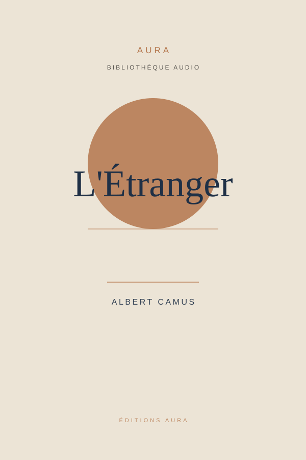

Disponible
Disponible
Recherche & filtres
Trouver le bon livre.
Quatre états d'une même page : résultats, aucun résultat, chargement et erreur. La recherche reste lisible à chaque étape.
camus — 2 livres trouvésTri : pertinence
« camus »
Romans
Moins de 10 h
Disponible

DisponibleAucun livre trouvé
La recherche « camus », avec ces filtres, ne donne aucun résultat. Vérifiez l'orthographe, ou retirez un filtre pour élargir.
Suggestions : « Camus », « Albert Camus », « romans courts ».
Recherche en cours…Les résultats arrivent
Chargement des résultats — la structure de la page reste stable.
La recherche n'a pas répondu
Le catalogue est momentanément indisponible. Votre recherche et vos filtres sont conservés — réessayez dans un instant.
Aucune donnée n'a été perdue. Si le problème persiste, contactez-nous.